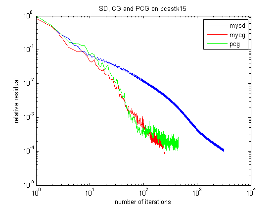
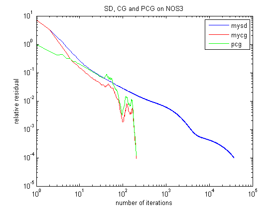
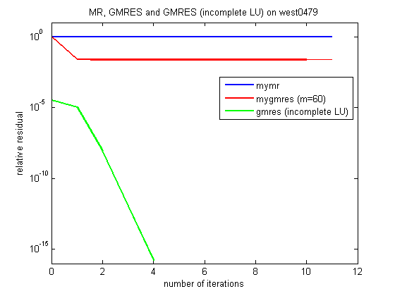
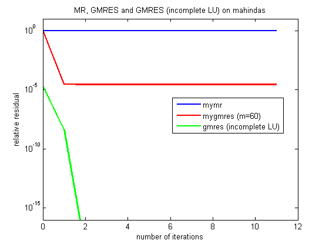

- Steepest Descent (SD) mysd.m
- Conjugate Gradient (CG) mycg.m (We also use matlab function "pcg" without pre-conditioning as a comparison of "mycg".)
- Minimal Residual (MR) mymr.m
- Restarted GMRES (with Arnoldi Method) mygmres.m myarnoldi.m
- Symmetric positive definite matrices: bcsstk15.mtx NOS3.mtx
- Nonsymmetric matrices: west0479.mtx mahindas.mtx
- Symmetric positive definite matrices main_spd.m
- Non-singular matrices main_ns.m
- You may also need this function to readin matrices mmread.m
- bcsstk15

- NOS3

- west0479

- mahindas
